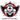

De: La Frikipedia, la enciclopedia extremadamente seria.
De: La Frikipedia, la enciclopedia extremadamente seria. De: La Frikipedia, la enciclopedia extremadamente seria.

|
FRIKIPEDIA QUIERE QUE ESTA DEFINICIÓN
PASE A SER UN ARTÍCULO FRIKIPÉDICO La información contenida en este artículo es una mínima parte de su jugo total, así que ponte los guantes, saca el tupperwere y empieza a exprimir el tema. Si lo haces serás recompensado con una galleta en almíbar y algo más. |
| De la serie conflictos armados: | ||||
| Guerra de los Indies | ||||
| ||||
| Lugar y fecha | Europa. 2016-2018 | |||
|---|---|---|---|---|
| Bandos | Coalición Indy: | Antiindies: | ||
| Fuerzas | República Mafiosa de Sicilia  Ositania Irlanda Reino de Gibraltar |
Andorra Albania | ||
| Comandantes | Francisco "el holandés" Willie McDougal Gordo Braun Fabián Picado |
Maria Dolores de Cospedal Carlos del Gallo David Camarón Sauron Anxo Quintana | ||
| Armas | Espías prostitutas Pedofilia Suerte Ganar terreno al mar |
Orcos Gitanos en fragonetas blindadas | ||
| Bajas | Muchos. Todos los supervivientes fueron uno a uno decapitados en el Camp Nou. | A nadie le importa. Eran todos canis, rusos y demás escoria. | ||
| Resultado | Stato stupido. Osea, que después de que media Europa fuera aniquilada, todo volvió a ser igual que antes. | |||
La guerra de los Indies es un conflicto armado que comenzará allá por el año 2016 cuando Cataloña y Uskadi dejen de tocarse los huevos y declaren su independencia. Esta guerra enfrentará a la Coalición Indy (que debe significar algo así de independiente en catalán y las potencias Antiindies (como no tenían imaginación, les siguieron el rollo a los Indies).
Por el año 2016, Arturo Mas estaba hasta los mismísimos cuyons de lloriquearle a Marrano Rajoy para que le dejara hacer una consulta independentista. Fue tal el cabreo que llamó a Rajoy y le dijo que o le dejaba hacer la consulta o declaraba la independencia. Marrano se descojonó de él una vez más. Entonces Arturo salió al balcón de la Generalitat y proclamó la República Independiente de Cataloña. Nadie le hizo ni puto caso, pero al día siguiente salió en el piriódico y entonces ya se armó la gorda (es que el piriódico...). Entonces comenzó la Guerra Civil Catalana, entre la Guardia Sivil y los Moscosos de Cuadra. Aunque los verdes resistieron valientemente, fueron brutalmente derrotados en la gran batalla de Hospitalet de Llobregat. Después de eso, Marrano Rajoy envió a Cataloña un ejército formado por más de 50.000 tanques, pero como allí todas las carreteras son de peaje y había mucha crisis, tuvieron que cancelar la operación.
Mientras, en Uskadi, el Lehendakari Ibarretxe (el cabronazo volvió a hacerse con el poder) vio que a los catalufos les había salido bien lo de la independencia, así que le dio por hacerla él también. Espiña intentó joder bien a Uskadi, pero los vascones tenían un arma invencible: la División de Ertzantzas de Bilbao entrenada por Chuck Norris. Así que Espiña sufrió una gran derrota en la batalla de Logroño.
Tras el batacazo españó en Logroño, Cataloña aprovechó para invadir Aragorn, la Comunidad Valenciana y las Islas Baleares. Cataloña y Uskadi acordaron crear la Coalición Indy para luchar contra Espiña y juntos fueron a conquistar la estratégica ciudad de Soria, pero un pequeño ejército formado por socios del Numancia bastó para repelerlos.
En Fabián Picado aprovechó el lío para extender la colonia por toda la provincia de Fabián Picado se fue a vivir a la Alhambra de Granada y se aficionó a ir de putas, consumir crack y fumar cachimba.
En Italia y Gabacholandia se descojonaron pero bien de la gran cagada de Marrano Rajoy, pero ya no se reían tanto cuando fueron ellos los que la cagaron al día siguiente.
En Salvatore Giuliano. Lo primero que hizo al ser libre fue una Yoryo Napolitano, consiguió controlar el norte de Sicilia (donde estuviera la Mafia estaba él).
Entonces el expapa Guardia Suiza invadir la parte de Italia que no estaba controlada por Silvio Mussolini y, después, realizó un rito satánico para invocar a los 4 Jinetes del Apocalisis para que acabaran con Mussolini. Pero los jinetes se habían pasado los últimos 2000 años metidos en un bujero y no se habían enterado de que se habían inventado las artillerías antiaéreas. Vamos, que cayeron como moscas.
Mientras, en Bretaña también proclamó su independencia. El gobierno gabacho simplemente acusó a los líderes de la rebelión de ser gitanos y les deportó a Albania, incluido Pedobear.
Pero entonces, flamencos y valones (los vecinos que peor se llevan del mundo) se hartaron definitivamente los unos de los otros y estalló la Guerra Civil Francisco Holandés, les traicionó para unirse a Holandia (ya se veía venir por su nombre), así que se tuvieron que rendir. Los líderes de Gabacholandia, Alemaña y Holandia acordaron firmar la paz y el buen rollo en el Tratado de Luxemburgo, que decía lo siguiente:
-Bretaña. Además, sus líderes regresan de Albania, donde Pedobear había abusado de 40.000 niños.
-Holandia recibe toda Bélgica y Luxemburgo (y eso que los luxemburgueses les habían dejado amablemente firmar el tratado en su país.
-Alemaña recibe la mitad de lo poco que quedaba de Gabacholandia.
-Gabacholandia se queda en solo Paguis y cuatro puebluchos de alrededor. Y todo esto solo por querer invadir Bélgica, que es una puta mierda.
Todo esto hizo revolverse en su tumba a Carlos del Gallo (fracasado héroe gabacho que no conoce ni su madre) hasta tal punto que volvió de entre los muertos para intentar reconstruir Gabacholandia.
Cuando Bretaña se independizó de David Camarón dijo que solo había una Bretaña (la grande) y les denunció por bretones dijeron que ni de coña se iban a cambiar el nombre, así que David Camarón decidió invadir Bretaña repitiendo lo del Día D (más conocido como Salvar al soldado Ryan). Le encomendó la misión a su mejor comandante: Jack Sparragus (la Royal Navy no estaba en sus mejores días). Pero los holandeses no querían que invadieran a su aliado, así que enviaron a toda su flota liderada por Davy Jones tócate los cojones (el capitán del Holandés Errante).
La gran batalla tuvo lugar en el canal de la Mancha (donde solía andar Bretaña. Pero se encontraron con una bretones y se los comieron asados con mostaza de Dijon y queso Brie (eran caníbales con buen gusto). De Jack Sparragus nunca más se supo, aunque se cree que sobrevivió y se fue a fumar porros a algún lugar de Jamaica.
En Cutty Sark. Pero los jardinero Willie se encabronó y él solito se cargó a 6 millones de ingleses.
Este artículo sigue en construcción.
Autor(es):